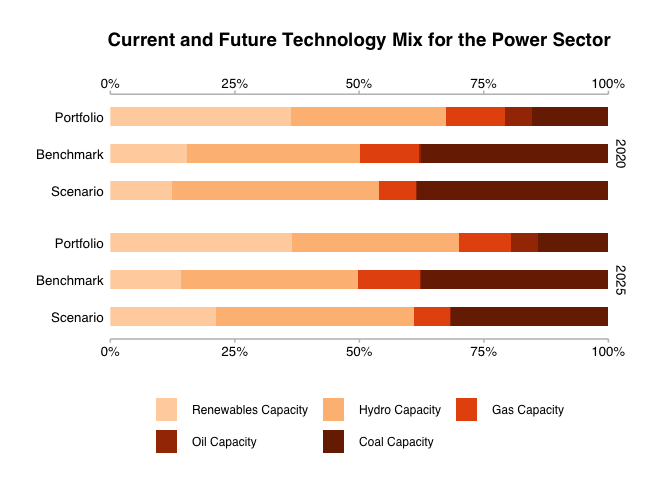
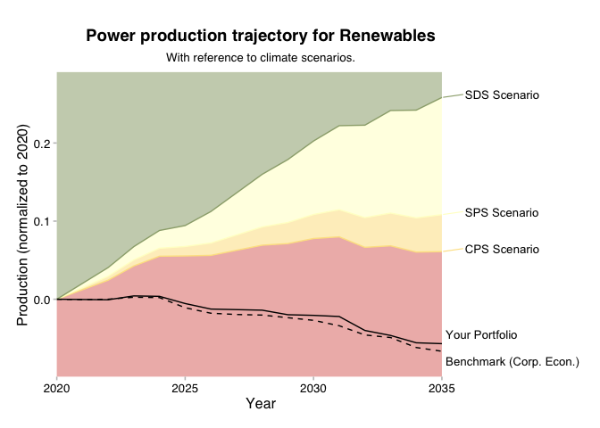

The goal of r2dii.plot is to help you plot 2DII data in an informative, beautiful, and easy way.
Installation
You can install the released version of r2dii.plot from CRAN with:
install.packages("r2dii.plot")And the development version from GitHub with:
# install.packages("devtools")
devtools::install_github("2DegreesInvesting/r2dii.plot")Example
The r2dii.plot package is designed to work smoothly with other “r2dii” packages – r2dii.data, r2dii.match, and r2dii.analysis. It also plays well with the ggplot2 package, which helps you customize your plots. Here, we’ll use an example data set that comes with r2dii.plot and that resembles the output of the target_market_share() function in the r2dii.analysis package.
Plot techmix chart
- Use
qplot_*()to quickly get a plot with standard titles and labels.
# `data` must meet documented "Requirements"
data <- market_share %>%
filter(
sector == "power",
region == "global",
scenario_source == "demo_2020",
metric %in% c("projected", "corporate_economy", "target_sds")
)
qplot_techmix(data)
#> The `technology_share` values are plotted for extreme years.
#> Do you want to plot different years? E.g. filter data with:`subset(data, year %in% c(2020, 2030))`.
- Use
plot_*()for a more ‘bare’ plot that you can customize yourself by modifying the input data and applyingggplot2functions.
data <- market_share %>%
filter(
sector == "power",
region == "global",
scenario_source == "demo_2020",
metric %in% c("projected", "corporate_economy", "target_sds"),
year %in% c(2020, 2030)
) %>%
mutate(
label = case_when(
metric == "projected" ~ "Your Portfolio",
metric == "corporate_economy" ~ "Corporate Economy Benchmark",
metric == "target_sds" ~ "SDS Scenario"
),
label_tech = case_when(
technology == "renewablescap" ~ "Renewables Cap.",
technology == "hydrocap" ~ "Hydro Cap.",
technology == "gascap" ~ "Gas Cap.",
technology == "oilcap" ~ "Oil Cap.",
technology == "coalcap" ~ "Coal Cap."
)
)
plot_techmix(data) +
labs(
title = "Technology Mix for Sector: Power",
subtitle = "For years 2020 and 2030."
)
#> The `technology_share` values are plotted for extreme years.
#> Do you want to plot different years? E.g. filter data with:`subset(data, year %in% c(2020, 2030))`.
For examples of other plots and data sets please visit Get started with r2dii.plot.